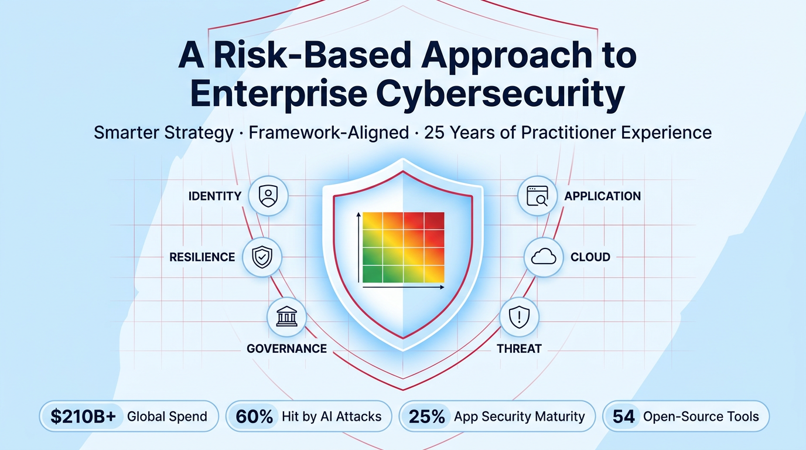
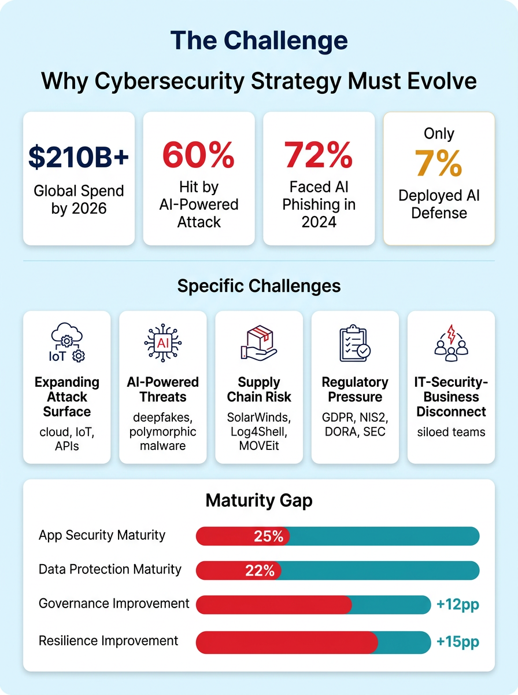
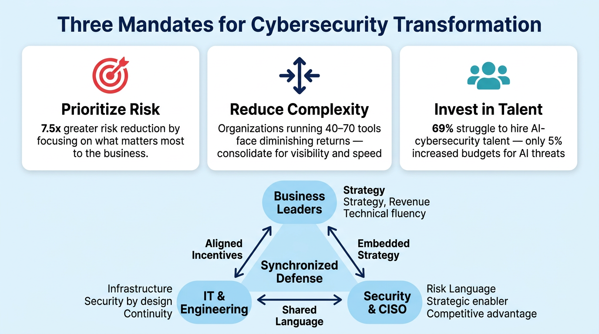
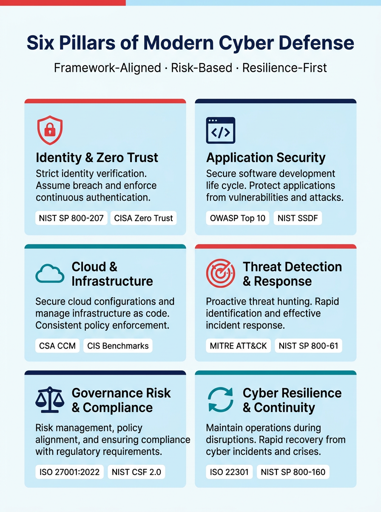
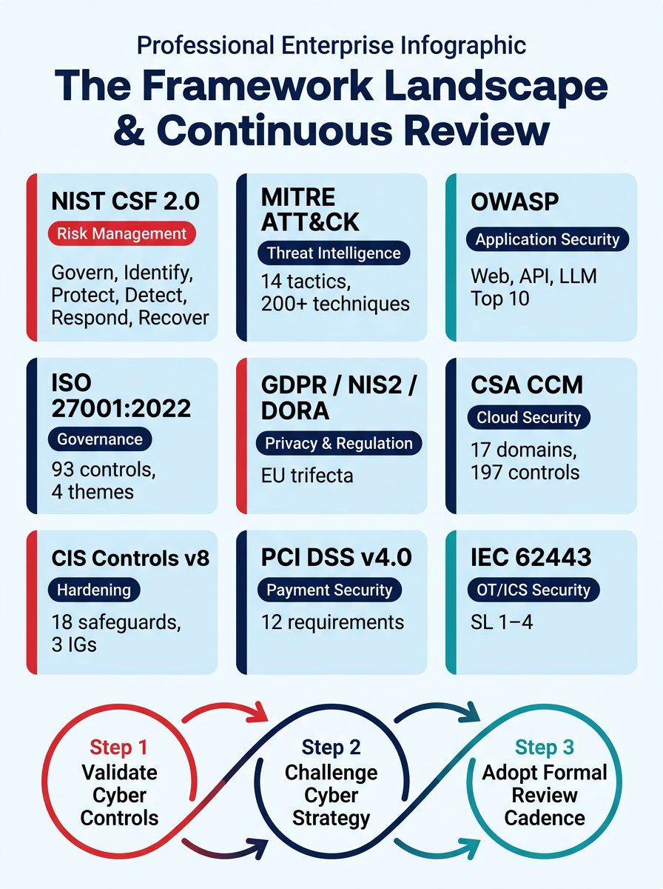

Organizations spent over $200 billion on cybersecurity in 2024, yet breaches continue to rise. The answer is not more spending — it is smarter strategy. A comprehensive, framework-aligned approach informed by industry research, global standards, and 25 years of practitioner experience.

The digital attack surface has expanded exponentially. Cloud adoption, remote work, IoT proliferation, AI-powered attacks, and third-party dependencies have rendered perimeter-based security obsolete. Organizations need a risk-based, resilience-first approach.

Cloud workloads, remote endpoints, IoT devices, and third-party integrations have dissolved the traditional security perimeter. Every API, SaaS tenant, and container is now a potential entry point. Organizations running 40–70 security tools simultaneously face complexity that is itself a vulnerability.
Adversaries are leveraging generative AI for sophisticated phishing, polymorphic malware, deepfakes, and automated vulnerability exploitation. A $25 million fraud was triggered by a deepfake video call impersonating a CFO. Yet 69% of organizations report difficulty hiring talent with AI-cybersecurity expertise.
SolarWinds, Log4Shell, and MOVEit demonstrated that third-party and software supply chain attacks can bypass even mature security programs. Only 28% of companies achieve the highest maturity score in third-party cyber risk management. Vendor risk is now a board-level concern.
GDPR, NIS2, DORA, SEC cyber disclosure rules, and cross-border data flow regulations have raised the stakes for non-compliance from reputational damage to existential fines. Tougher regulatory oversight and soaring breach costs are elevating cybersecurity to the boardroom agenda.
Digital innovation often outpaces the measures companies take to safeguard their systems. IT teams, cybersecurity experts, and business leaders operate with different goals, work independently, and speak different languages. Many leaders still treat cybersecurity as an IT line item rather than a strategic imperative.
Despite growing investment, only 25% of companies achieve highest maturity in application security, and only 22% do so in data protection or software supply chain risk management. The gap between compliance checkbox and actual resilience remains dangerously wide.
Global cybersecurity surveys reveal that while overall maturity is improving, critical gaps remain. The biggest gains have been in governance and resilience — but offensive capabilities and AI adoption are lagging dangerously behind the threat landscape.
Industry research with the world's largest organizations has revealed three broad mandates that drive effective cybersecurity transformation — shifting from maturity-based checklists to a risk-based, resilience-first model.

The most effective cybersecurity organizations are not defined by their tools — they are defined by the alignment between their business leaders, IT teams, and security functions. Cybersecurity must be reframed as a business discipline, not a technical silo.
Focus on strategic priorities: revenue growth, customer engagement, and operational efficiency. Must develop technical fluency to assess risks and prioritize investments — rather than over-relying on IT and security teams without sufficient oversight.
Own the infrastructure, platforms, and development pipelines. Must embed security by design into every architecture decision, coordinate IT recovery with business continuity, and operate with centralized accountability.
Evolve from a technical gatekeeper to a strategic enabler. The CISO must communicate risk in the language of the business, align security investments to value creation, and position cybersecurity as a competitive advantage — not a brake on innovation.
The synchronized approach: Align incentives across business, IT, and security. Embed cybersecurity and resiliency within the broader business strategy. Protect the most critical business services, test risk scenarios, and ensure effective training, awareness, and communication. This is a people and organization challenge as much as a technical one.
A comprehensive cybersecurity strategy must address six interconnected domains. Each pillar maps to industry frameworks and is supported by open-source tools from the PhalanxCyber collection.

No single framework covers every dimension of cybersecurity. A mature strategy layers multiple frameworks — each addressing specific domains, audiences, and regulatory requirements.

Each major cloud provider offers a security-focused well-architected framework. These are not marketing material — they are engineering playbooks for building secure, resilient, and cost-efficient cloud environments.
Prescriptive guidance for securing AWS workloads across identity, detection, infrastructure protection, data protection, and incident response.
Microsoft's framework for designing secure Azure solutions, integrating Defender, Entra ID, Sentinel, and Azure Policy for comprehensive cloud posture management.
Google's security blueprint emphasizing BeyondCorp (zero trust), workload identity federation, VPC service controls, and Security Command Center integration.
Leading organizations adopt a three-step continuous review process to ensure cybersecurity strategy remains aligned to evolving threats, business priorities, and technology capabilities.
Every strategic pillar above can be operationalized with the PhalanxCyber open-source tool collection — 54 scanners, 5,800+ rules across 20+ compliance frameworks, at zero licensing cost.
Browse the complete collection of open-source security scanners that operationalize every pillar of this cybersecurity strategy — from SAST to CSPM to detection engineering.
The strategic frameworks and industry data referenced on this page are drawn from the following authoritative sources.